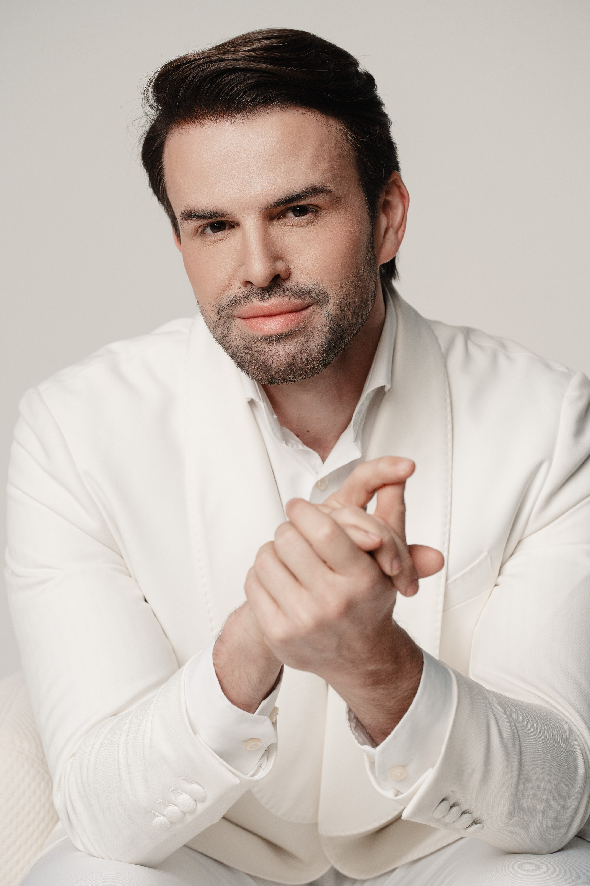
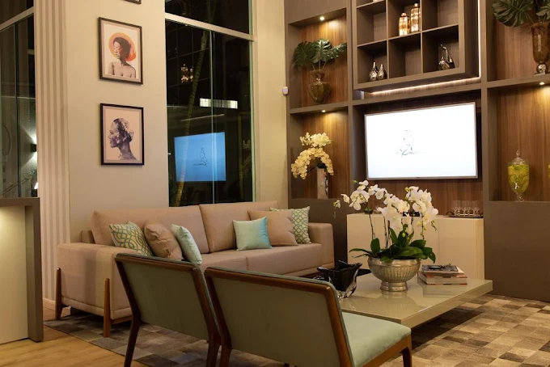

Cirurgia Plástica · Palmas – TO
Sua beleza com Arte e Ciência
Resultados naturais, cuidado personalizado e excelência clínica em cada detalhe da sua jornada estética.
Presidente SBCP
·
CRM 3417-TO
·
RQE 15121
Resultados naturais, cuidado personalizado e excelência clínica em cada detalhe da sua jornada estética.
A Casa Jonas Lima é uma referência em cirurgia plástica no Tocantins. Mais do que um consultório, é um espaço pensado para que cada paciente se sinta acolhida, segura e confiante em cada etapa da sua transformação.
Procedimentos cirúrgicos e estéticos conduzidos com técnica apurada e olhar artístico.
Definição e contorno corporal com técnica precisa, para resultados que valorizam as curvas e a autoestima da paciente.
Técnica avançada para harmonia natural, com próteses selecionadas de acordo com o biotipo e os objetivos de cada paciente.
Remodelação do abdome com retirada de excesso de pele e gordura, devolvendo firmeza e confiança ao corpo.
Elevação e remodelação das mamas com resultados naturais, devolvendo firmeza e harmonia ao contorno corporal.
Redução e remodelação das mamas aliviando desconfortos físicos e proporcionando equilíbrio estético e bem-estar.
Rinoplastia, blefaroplastia, lifting facial, gordura localizada, preenchimentos e muito mais. Fale conosco.

Especialista em cirurgia plástica com formação de excelência e mais de uma década de experiência transformando vidas no Tocantins. O Dr. Jonas Lima une técnica cirúrgica refinada a um olhar humano e sensível para cada paciente, entendendo que beleza real começa pelo bem-estar e pela autoconfiança.
Desde a primeira consulta me senti completamente acolhida. O Dr. Jonas é um profissional excepcional — atencioso, transparente e extremamente habilidoso. O resultado superou todas as minhas expectativas.
Fiz minha rinoplastia com o Dr. Jonas e não tenho palavras para descrever o quanto amei o resultado. Natural, harmonioso, exatamente o que eu queria. A clínica é linda e a equipe, maravilhosa.
Sempre tive insegurança com o meu corpo. Após a lipoaspiração com o Dr. Jonas, me olho no espelho com orgulho pela primeira vez em anos. O cuidado pós-operatório foi impecável.
Três anos após a cirurgia e ainda me surpreendo com o resultado. O Dr. Jonas tem uma habilidade incrível de entender o que você realmente quer e entregar com maestria. Recomendo de olhos fechados.

Um espaço moderno e acolhedor, projetado para que você se sinta segura e cuidada em cada visita.
Procedimentos realizados em ambiente hospitalar com todo suporte de segurança.
Cada consulta é um espaço exclusivo para entender seus objetivos e planejar com cuidado.
Suporte dedicado desde o pré até o pós-operatório, com retornos e cuidado contínuo.
Localização central e de fácil acesso para pacientes de toda a região.
Uma conversa aberta e sem julgamentos sobre seus objetivos. O Dr. Jonas ouve, avalia e apresenta as melhores opções para o seu caso de forma honesta e personalizada.
Após a consulta, elaboramos um plano completo com técnica, materiais, preparação pré-operatória e cronograma. Tudo detalhado para que você tenha segurança total.
Realizado em ambiente hospitalar credenciado, com toda a estrutura e equipe necessários para o mais alto padrão de segurança e precisão técnica.
Acompanhamento próximo e atencioso durante toda a recuperação. Retornos programados, orientações claras e suporte disponível para garantir o melhor resultado.
Agende sua consulta hoje mesmo e descubra o que é possível fazer por você com cuidado, técnica e respeito pela sua individualidade.
Agendar pelo WhatsApp